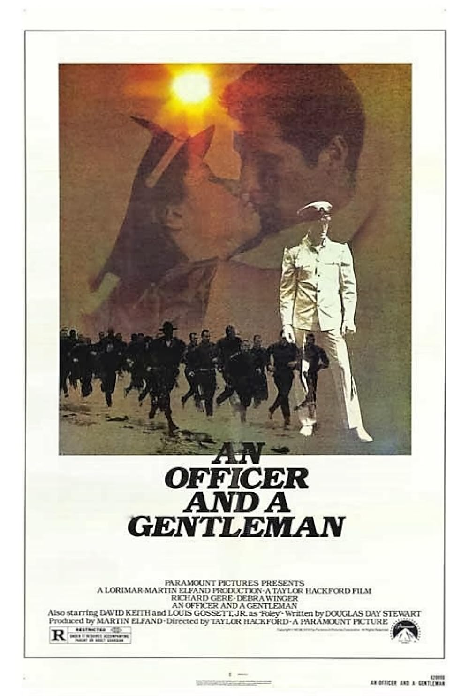

An Officer and a Gentleman
55th Academy Awards
(Oscars 1983)
6 Nominations, 2 Awards
| Watched |
| Nominations | ||
|---|---|---|
| Category | Nominees | Result |
| Actress in a Leading Role | Debra Winger | Nominated |
| Actor in a Supporting Role | Louis Gossett, Jr. | Won |
| Writing (Screenplay Written Directly for the Screen) | Douglas Day Stewart | Nominated |
| Film Editing | Peter Zinner | Nominated |
| Music (Original Score) | Jack Nitzsche | Nominated |
| Music (Original Song) "Up Where We Belong" |
Buffy Sainte-Marie, Jack Nitzsche, and Will Jennings | Won |